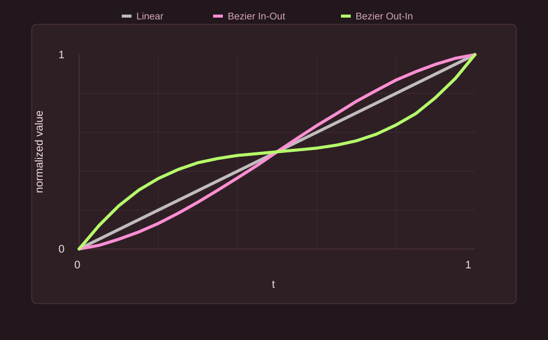

Features
- Beatmap
- Select or drag and drop a
.osufile. - Start Point / End Point
- Enter the time, Slider Velocity, and Volume for the edit range.
- Include Start Time / Include End Time
- Choose whether timing points exactly on the range edges are included.
- Overwrite
- Removes all inherited timing points in the selected range, then creates new inherited timing points.
- Modify
- Modifies existing inherited timing points in the selected range.
- Remove
- Removes inherited timing points in the selected range.
- Keep
- Keeps the original inherited Velocity or Volume instead of applying the input value.
- Dense Mode
- Creates dense inherited timing points at
1/16 snap,1/8 snap, or1/4 snap. - -1/16 Offset Mode
- Places generated SV points slightly before the target object. When 1/12 snap notes are present, nearby notes also use a
-1/12 offset. This mode is recommended when placing SV points with volume changes. - SV Mode
- Selects how Velocity and Volume move from the start value to the end value.
- Backup
- When enabled, the app creates a backup folder in the local app folder and saves the original
.osufile before applying changes. Use the Open Backup Folder button to view the backups. To restore a file, open the dated.osubackup file and copy its contents back into the original beatmap file. - Language / Manual
- The app can switch between English and Japanese, remembers the last language, and opens this manual from the title bar.
Advanced Mode
Advanced Mode adds profile controls. A profile saves the current input values and options so the same SV setup can be reused later.
- Save: saves the current values into a named profile.
- Load: restores a saved profile.
- Delete: removes a saved profile.
- Profiles include the edit values, range options, Dense Mode snap, Offset Mode, SV Mode, Keep settings, and Backup setting.
Changes Added in plus
ModifyandRemovenow only affect inherited timing points, also known as green lines. Uninherited timing points, or red lines, are preserved.Overwriteis now a true overwrite. It removes all green lines inside the selected range before creating new ones. Red lines are preserved.- Normal Overwrite also creates SV points on barlines. Barline positions are calculated from red lines using
beatLength * meter, and the final timestamp is floored. - Dense Mode supports
1/16 snap,1/8 snap, and1/4 snap. -1/16 Offset Modeincludes handling for 1/12 snap patterns: when 1/12 snap notes are present, nearby notes also use a-1/12 offset. Other hit objects and barlines use a-1/16 offset.- The Kiai option was removed. Overwrite inherits Kiai/effects from the start point. Modify keeps each timing point's original effects.
- Velocity and Volume can be kept independently with small
Keepcheckboxes. - Volume input is limited to
5through100. - Added the
SV Modeselector. The default behavior isLinear, and the old Exponential checkbox behavior is now available asCubic In / Accelerate Curve.Bezier In-OutandBezier Out-Inare also available as fixed-control-point Bezier modes. - The app supports English and Japanese UI text, and the selected language is kept for the next launch.
- The title bar includes a Manual link that opens this documentation.
- The app checks GitHub Releases at most once every 24 hours and shows a notice when a newer version is available.
SV Mode Formulas
Let the progress value be:
Also let s be the start value and e be the end value. The normal domain is:
All modes interpolate from s to e. If the start and end values are the same, the value stays constant for the whole range, including the Bezier modes. The Bezier modes use fixed control points; they cannot be edited in the app.


| Mode | Formula | Shape |
|---|---|---|
| Linear | Constant difference over time. | |
| Ratio | Constant ratio over time. | |
| Cubic In / Accelerate Curve | Slow at the beginning, faster near the end. | |
| Cubic Out / Decelerate Curve | Fast at the beginning, slower near the end. | |
| Sine In / Accelerate Curve | Smooth acceleration. | |
| Sine Out / Decelerate Curve | Smooth deceleration. | |
| Bezier In-Out | Fixed Bezier curve with control values 0.10 and 0.90. Slow at both ends and faster near the middle. |
|
| Bezier Out-In | Fixed Bezier curve with control values 0.90 and 0.10. Fast at both ends and flatter near the middle. |
For Slider Velocity, the inherited timing point beat length is:
For Volume, the value is rounded to the nearest integer.